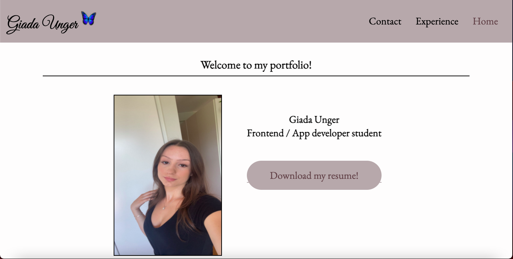
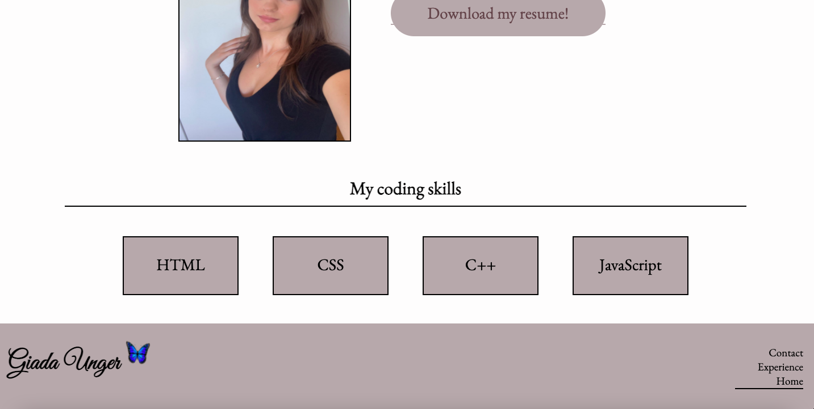

My first portfolio



This was the first time I had built a portfolio. We had been given the task of building our very own
portfolio with only CSS and HTML. The project had no limits when it came to the design, we got to choose
pretty much everything. The only requirement that existed was that we had to have a contact page,
experience page, and a home page. The form on the contact page doesn’t work, we were told to focus on the
design and html/css code rather than making the form work properly.
This project was very fun. But I wasn’t completely happy with the end result. When I submitted my
finished project, I inspected it to see how I could have done differently and improve it. When I had an
idea of how to solve problems that had stumbled upon during the project, I started from scratch and rebuilt
the whole thing. This resulted in my second portfolio.